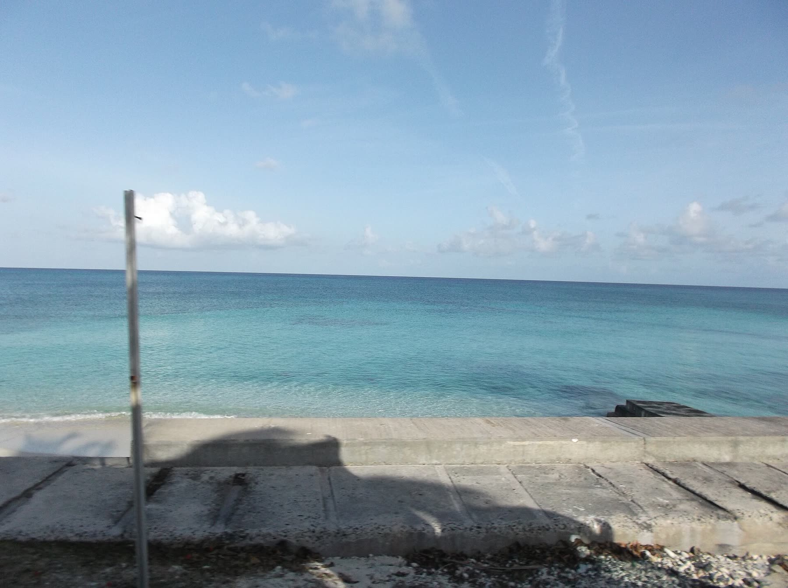
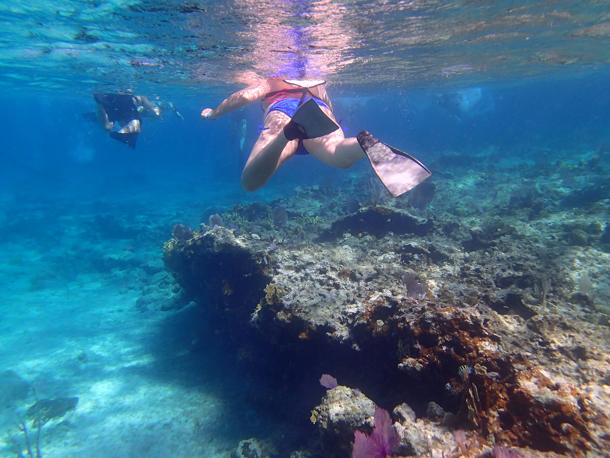

The Sandbar Restaurant sits right on the water just steps from Manta House. The quintessential beach bar… no shoes or shirt required.
We serve a variety of local seafood specialties, including fresh caught grouper, lobster, conch, wahoo and mahi mahi. We also serve North American fare like our famous Sandbar burgers, shrimp quesadillas, chicken and ribs with island style peas and rice.
Enjoy an ice cold beer or the best rum punch on the island while looking out at the beautiful turquoise water, watching for a breaching whale or a green flash at sunset.
The Sandbar
In their own words, from the Manta House website
